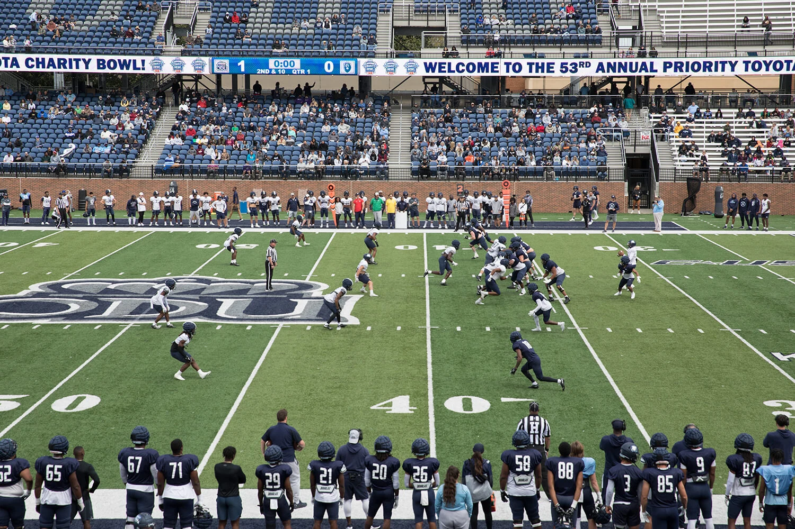

Apr182026
2026 event · Past event
The Priority
Charity Bowl
America’s longest-running charity football game!
Explore sponsorships ↗Event details & sponsor party
Make plans for a great evening of family fun, entertainment and giving back at the 57th Annual Priority Charity Bowl! Show your support and cheer on the ODU football team during their spring football game as we raise money for 62 different Hampton Roads Children’s charities! Mark your calendar for Saturday, April 18, 2026.
2026 Charity Bowl Sponsors Party
Saturday, April 18 · S.B. Ballard Stadium, Old Dominion University. Live music by a special guest at the party for sponsors.
The event page reported more than $830,000 raised for local children’s charities in the preceding year.